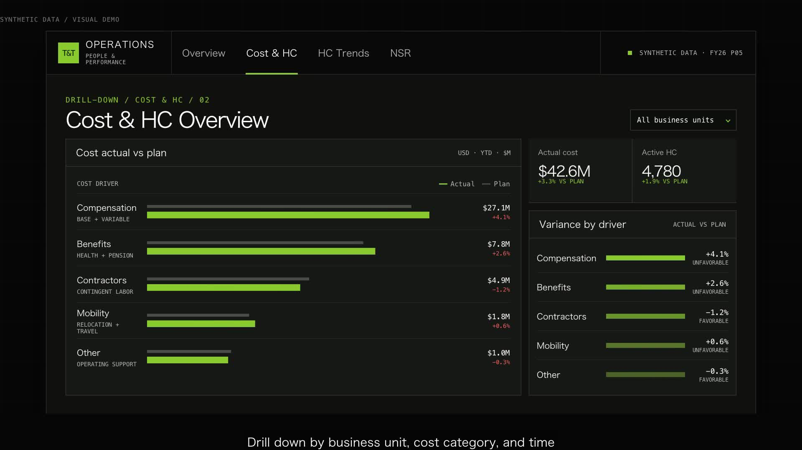

AI and HR practice
I record my journey of learning AI, hoping to grow and make progress together with you!
One script, two models
The same script was produced with DeepSeek and Grok to compare how each model presents the video task and what it costs to generate.
DeepSeek model
Generation cost: approximately RMB 1.3.
Grok model
Generation cost: RMB 4.6.
Upgrade English Version
Upgraded English video with a technology-focused visual style.
Grok Trial
A comparison of the two models.
Bilingual Dashboard videos
Watch the original Chinese and English releases, followed by the white Operator’s Eye optimized versions. All interfaces use synthetic data.
Chinese Dashboard walkthrough
A Chinese-language overview of the dashboard and cost analysis.
English Dashboard walkthrough
An English-language version of the same HR dashboard demonstration.
Optimized Dashboard videos
A rebuilt bilingual release that presents the same cost, headcount, trend and productivity analysis on a clearer light interface.
- Light visual system: a white background replaces the dark version, with Deloitte Green and Cost Blue retained.
- New cost views: a cost-composition donut and a plan-to-actual variance waterfall.
- Core analysis retained: Cost & HC, HC Trends and NSR / GM / Cost per FTE continue to update together.
- Language-specific timing: nine scenes follow each language’s own narration and scale to 90% with a caption-safe band.
Chinese optimized Dashboard walkthrough
74 seconds, with a light interface and new cost views.
English optimized Dashboard walkthrough
84 seconds, with a light interface and rebuilt bilingual timing.
AI workflow
Start with human judgement, then move through AI execution, staged confirmation and a final review.
-
01
Video brief
Set the audience, content scope, visual standard and language versions.
-
02
Production requirements
Turn the structure, visuals, captions and acceptance criteria into AI-executable steps.
-
03
Review checkpoints
AI moves step by step and waits for confirmation at each key checkpoint.
-
04
Final video review
After completion, AI reflects on the product and proposes three optimisation ideas.

Original release review
I set the requirements for the original bilingual releases; AI executed the plan and confirmed each step. The two original videos cost under RMB 6; the follow-up work became the white Operator’s Eye versions above.